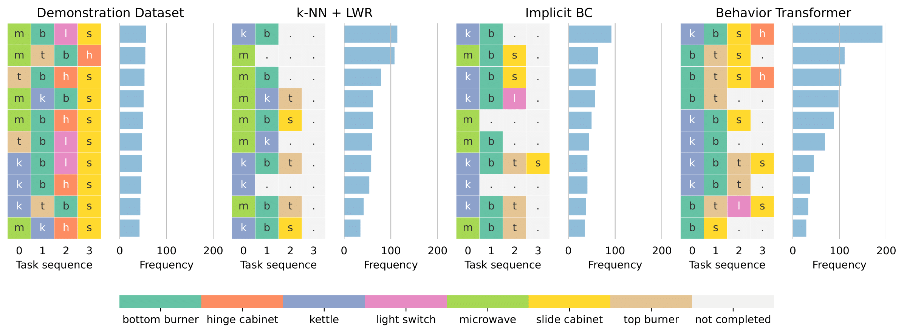

Abstract
While behavior learning has made impressive progress in recent times, it lags behind computer vision and natural language processing due to its inability to lever- age large, human generated datasets. Human behavior has a wide variance, multiple modes, and human demonstrations naturally don’t come with reward labels. These properties limit the applicability of current methods in Offline RL and Behavioral Cloning to learn from large, pre-collected datasets. In this work, we present Behavior Transformer (BeT), a new technique to model unlabeled demonstration data with multiple modes. BeT retrofits standard transformer architectures with action discretization coupled with a multi-task action correction inspired by offset prediction in object detection. This allows us to leverage the multi-modal modeling ability of modern transformers to predict multi-modal continuous actions. We experimentally evaluate BeT on a variety of robotic manipulation and self-driving behavior datasets. We show that BeT significantly improves over prior state-of-the-art work on solving demonstrated tasks while capturing the major modes present in the pre-collected datasets. Finally, through an extensive ablation study we further analyze the importance of every crucial component in BeT.
Unconditional Rollouts of BeT
Unconditional rollouts from BeT models trained from multi-modal demonstartions on the CARLA, Block push, and Franka Kitchen environments. Due to the multi-modal architecture of BeT, even in the same environment successive rollouts can achieve different goals or the same goals in different ways.
Method
Behavior Transformers (BeT), a new method for learning behaviors from rich, distributionally multi-modal data.
Architecture of Behavior Transformer is shown below. (A) The continuous action binning using k-means algorithm that lets BeT split every action into a discrete bin and a continuous offset, and later combine them into one full action. (B) Training BeT using demonstrations offline; each ground truth action provides a ground truth bin and residual action, which is used to train the minGPT trunk with its binning and action offset heads. (C) Rollouts from BeT in test time, where it first chooses a bin and then picks the corresponding offset to reconstruct a continuous action.

BeT is based of three key insights.
- First, we leverage the context based multi-token prediction ability of transformer-based sequence models to predict multi- modal actions.
- Second, since transformer-based sequence models are naturally suited to predicting discrete classes, we cluster continuous actions into discrete bins using k-means. This allows us to model high-dimensional, continuous multi-modal action distributions as categorical distributions without learning complicated generative models.
- Third, to ensure that the actions sampled from BeT are useful for online rollouts, we concurrently learn a residual action corrector to produce continuous actions for a specific sampled action bin.
Experiments
Performance of BeT compared with different baselines in learning from demonstrations. For CARLA, we measure the probability of the car reaching the goal successfully. For Block push, we measure the probability of reaching one and two blocks, and the probabilities of pushing one and two blocks to respective squares. For Kitchen, we measure the probability of tasks being completed by the model within the allotted 280 times. Evaluations are over 100 rollouts in CARLA and 1,000 rollouts in Block push and Kitchen environments.

Distribution of most frequent tasks completed in sequence in the Kitchen environment. Each task is colored differently, and frequency is shown out of a 1,000 unconditional rollouts from the models.

Future Work
In this work, we introduce Behavior Transformers (BeT), which uses a transformer-decoder based backbone with a discrete action mode predictor coupled with a continuous action offset corrector to model continuous actions sequences from open-ended, multi-modal demonstrations. While BeT shows promise, the truly exciting use of it would be to learn diverse behavior from human demonstrations or interactions in the real world. In parallel, extracting a particular, unimodal behavior policy from BeT during online interactions, either by distilling the model or by generating the right ‘prompts’, would make BeT tremendously useful as a prior for online Reinforcement Learning.